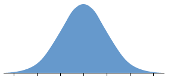
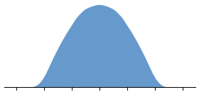
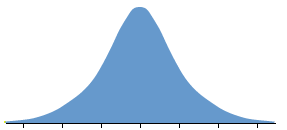

Assumption of normal population
The 95% confidence intervals that we developed for σ2 and σ used theory that assumed that the sample data arose from a normally distributed population.
The actual confidence level of the CIs is strongly dependent on whether the data are normally distributed.
If the data are normally distributed, the confidence level is 95%, but it can be considerably greater or smaller than 95% if the distribution has longer or shorter tails than a normal distribution.
| Population distribution | Confidence level | |
|---|---|---|
| Normal |  | exactly 0.95 |
| Shorter tails |  | can be much greater than 0.95 |
| Longer tails |  | can be much less than 0.95 |
Simulation: short tails
The diagram below repeats the simulation on the previous page, but takes random samples from a population whose tails are shorter than a normal distribution — a rectangular distribution. The population standard deviation, σ, is still 2.0.
The normal-distribution based 95% CI for σ is shown on the right. Click Accumulate then take 100 or more samples. Observe that almost all of the CIs include σ = 2.0.
The true confidence level is much higher than 95%
Simulation: long tails
The diagram below repeats the simulation with a population distribution that is skew with a fairly long tail towards the high values. The population standard deviation, σ, is still 2.0.
Again click Accumulate and take 100 or more samples. Observe now that far fewer than 95% of the CIs include σ = 2.0.
The true confidence level is much lower than 95%
Advice
Unless you are sure that the data really come from a normal population, do not rely on this confidence interval.